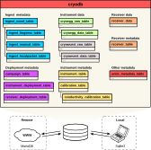
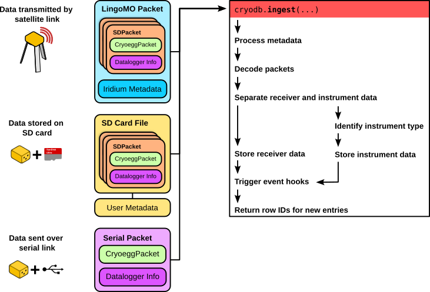

cryodb documentation¶
Project documentation for cryodb, creating and mantaining MariaDB database for output from CHIL instrumentation.
Contents:
Overview¶
The cryodb database package provides a wrapper to MariaDB and Sqlite3 databases for storing packets generated by CHIL instrumentation, primarly the Cryoegg and Cryowurst. Additionally, the database provides a repository for instrument, receiver and deployment metadata.
Note
Introducing the API around cryodb means that it’s not longer just a wrapper for the MariaDB/sqlite3 databases.
The cryodb.database submodule facilitates direct access to a database and is suitable for both local Sqlite3 instances and remote MariaDB instances.
The cryodb.server submodule exposes a REST API to provide remote access to a MariaDB instance of a cryodb.
Database structure¶
The cryodb database is a hierarchical database which splits data into the following categories:
Ingest metadata is data related to when the instrument data was added to the database.
Instrument data contains both the raw and processed instrument data for the Cryoegg and Cryowurst.
Instrument metadata relates to descriptions of the instruments and their calibration data.
Receiver data contains the processed data from Cryoegg receivers.
Receiver metadata relates to descriptions of the receiver, such as their type and manufacture date.
Deployment metadata contains details of when and where the instruments and receivers have been and are deployed.
Other metadata includes the units metadata table, which describes the units of measurement within the database.

Instances of the database are hosted on a remote server using MariaDB, or stored locally in a flat-file format using Sqlite3. Local instances of the database are intended to reference and update from a centrally hosted instance, so that instrument and deployment metadata can be kept up to date.
There are multiple sources of input data from instruments and receivers to the database:
Satellite data are packaged by the Cloudloop Iridium subscription manager into LingoMO packets, which contain the short data burst (SBD) payload.
SD Packets are stored locally to a receiver on the SD card, and are typically ingested as a group from a file.
Serial Packets are transferred over a physical serial (UART or USB) connection to a receiver.
The ingestion process for each data source, by which the raw data and associated metadata are inserted into the database, is slightly different; however, a common pattern is outlined in the figure below.

Development¶
Instructions for configuring the development environment for cryodb can be found here